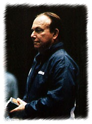

Abie Grossfeld (USA)
1956 and 1960 Olympian
1959 Pan American Games AA Champion
 Abie Grossfeld (shown above
in 1997) was elected to the National Gymnastics Hall of Fame in 1979. |
Grossfeld was born on March 1 in New York City and began gymnastics at the age of 15 (training at the West Side YMCA in New York City). He competed in 2 Olympic Games and 2 World Championships, as well as 3 Pan American Games, where he won 15 medals (8 of them gold). After retiring from competitive gymnastics, he became head coach at Southern Connecticut State University where the team won numerous team and individual titles in NCAA competition. Stand-outs included Peter Kormann and Mario McCutcheon. Grossfeld also coached the 1984 US Olympic men's team to gold in Los Angeles, and was the US Olympic men's team coach at the 1972 and 1988 Olympics. He is also an internationally-ranked judge.
Competition Results
1953
Maccabiah Games: 1st AA, 1st FX, 1st PH, 1st RG, 1st PB, 1st HB
1955
AAU Championships: 6th AA, 1st HB, 2nd FX, 4th PB
AAU Jr. Championships: 1st AA, 1st FX, 1st RG, 1st V, 1st PB, 2nd PH
Metropolitan Association Championships: 1st AA, 1st FX, 1st R, 1st PB, 1st
HB
National YMCA Championships: 1st Team, 1st AA, 1st FX, 1st R, 1st V, 1st
PB, 1st HB
1956
Maccabiah Games: 1st AA
Olympics: 6th Team, 39th AA
1957
AAU Championships: 2nd Team, 4th AA, 1st HB, 3rd FX, 4th R, 5th V, 5th PB
Maccabiah Games: 1st AA, 1st FX, 1st PH, 1st R, 1st V, 1st PB, 1st HB
Midwest Championships: 1st AA, 1st R, 1st HB, 2nd PB, 3rd FX
NCAA Championships: 2nd AA, 1st HB, 3rd FX, 8th V
1958
AAU Championships: 5th AA, 4th R, 4th PB, 5th V, 5th HB
World Championships: 7th Team, 53rd AA
1959
NCAA Championships: 3rd FX, 4th PB, 5th R, 9th PH, 9th HB
Pan American Games: 1st Team, 2nd AA
Pan American Games Trials: 1st AA
USA-FIN Dual Meet: 4th AA
1960
AAU Championships: 2nd HB, 3rd V, 3rd PB, 4th FX, 4th R
Natl. Gymnastic Clinic Championships: 1st AA, 1st R, 1st PB, 1st HB
Olympics: 5th Team, 36th AA
1961
AAU Championships: 10th AA
CSSR-USA Dual Meet: 2nd Team, 6th AA, 2nd HB
North-South Meet: 1st HB
POL-USA Dual Meet: 1st Team, 1st FX, 1st HB
USA-JPN Dual Meet: 12th AA
USA-USSR Dual Meet (Pennsylvania): 2nd Team, 7th AA, 2nd V, 3rd R
USSR-USA Dual Meet (Moscow): 2nd Team, 3rd FX
World Championships Team Trials: 6th AA
1962
AAU Championships: 5th AA
FRG-USA Dual Meet: 1st Team, 13th AA
Pan American Games Trials: 5th AA
World Championships: 6th Team, 85th AA
This page was created on March 18, 2000 and was last
updated on February 27, 2021.
© Gymn Forum